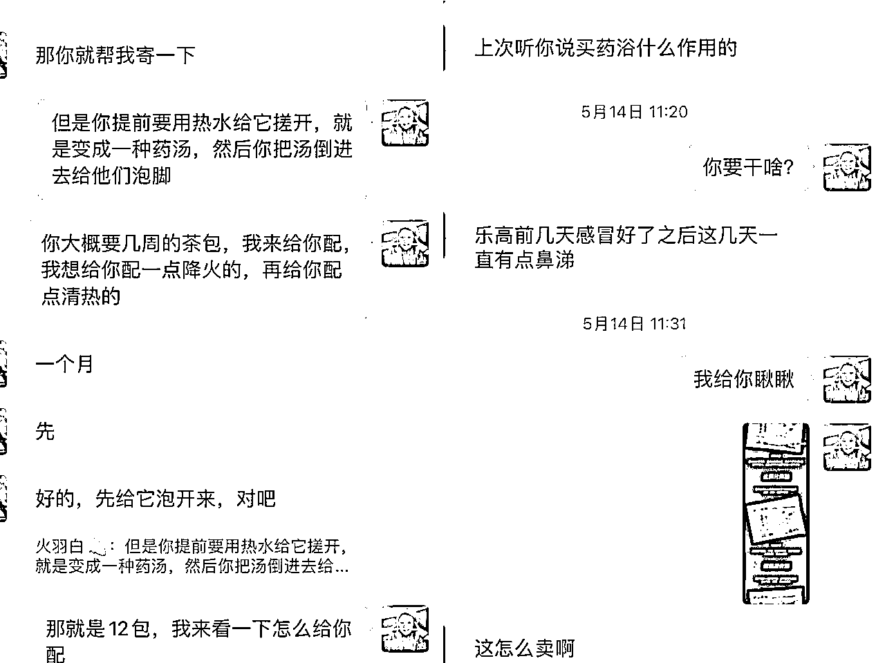

来源：https://zxbl90ip651.feishu.cn/docx/Hx9sdI4oko4KDVxXiYfcZvn0nGd
大家晚上好呀，我是火羽白，目前是一名宝妈创业陪跑教练，母婴赛道创业两年半营收7位数，也从0开始搭建了上百人的团队。
这半年以来我们团队一直在研究小红书母婴赛道的低成本玩法，目前是可以做到最快17天涨粉2000+，引流468人结合后端第3方供应链的渠道供货优势完成当月收入3000+的纯收益，非常适合0基础宝妈操作。
这是我们团队成员跑出来的小红书数据和后端私域变现的反馈记录，大家都是0基础开始的。
其实现在在小红书上关于母婴赛道的细分领域实在是太多了，新手宝妈想要入局实在是眼花缭乱难以选择。我选定位的建议其实就两个：
a.离钱近
有收入就是最好的证明，也是能够坚持下去的动力，只凭内心的力量埋头苦干这么多太难了，人是需要外界的正反馈来滋养的。
b.模仿成本低。
我们团队基本上都是全职宝妈，平时都要带孩子做家务，只能利用碎片化的时间来操作，所以在找对标的选择上会选择难度系数很低，不需要花费特别精力的。
目前我们团队在做的矩阵赛道主要分为2类，1是育儿知识，2是脾胃调理。
不是每个妈妈都想赚钱想要自我提升，但是没有一个妈妈不想把孩子带好，做育儿知识能够快速起号，吸引一大批泛流量，我们团队也有宝妈17天做出了70万的大爆款涨粉1000➕引流到私域400➕。
以下均为类似爆款例子，便于展示参考
同理脾胃调理的赛道选择也是如此，现在关于调理孩子积食和脾胃虚弱的话题在小红书上热度非常高，没有一个妈妈不关注孩子的健康问题的，所以我们做这个类型的账号很轻松能够获取关注。
以下均为类似爆款例子，便于展示参考
类似于这种笔记我们可以批量产出，基本上都是一天三更的状态，固定时间做图保存好定时发布，接着就是等待数据跑起来即可。
四件套分别为：头像 昵称 简介 背景图
我们基本上都是用自己和孩子的合照，这样会增加用户天然的信任感，大家同为宝妈，就不会有那么强的防备心理，如果不愿意出镜可以选择侧面或者背影，也可以在淘宝上画个亲子的手绘头像。
简介明了，不要太拗口，不建议用生僻字不利于用户记忆，比如**妈妈说育儿，**妈妈懂调理，可以写自己家宝宝的小名。
新号养号期间不要留任何的联系方式，千万不要有引流动作，正能量一点，积极阳光就好，否则会被限流。
通用公式：我是谁，我擅长什么，我的信任背书，我能为你提供什么价值，
举个例子，初期阶段可以写：我是一位在家带娃的全职妈妈，喜欢研究育儿知识，希望能够帮到大家
后期等到账号权重起来了我们可以在简介里也设置一些钩子用作引流，刚开始阶段，还是要猥琐发育。
颜色单一别太花里胡哨，不要把微信放在背景图里，系统会检测到然后让你重置背景图
我们宝妈的身份，放与宝宝的合照会很合适，加强信任度。
1.太长时间不用的老号和刚刚注册的新号一般来说是建议稍微养养号的，基本上3-5天即可。
2.刷一些关于我们赛道的相关笔记，比如育儿知识，脾胃调理这种关键词，不要浏览速度太快，正常刷笔记的速度，数据好的笔记就可以点赞收藏评论，半个小时左右就行，也可以分时间段去刷。
3.养号期间，不要发布任何关于第三方的信息，比如邮箱小号公众号微信之类的
4.如果这个时间过后发布了一篇新笔记流量很一般的情况下（1到200）可以重复上述动作再多养几天。老号太久没激活的话建议注销重来
多刷近期的低粉爆款，新手不要去对标大博主，因为人家本来的粉丝基数就特别高，去找笔记的数据高于粉丝数量的，这就是我们的优质对标。也因为时间比较近，还能吃到这篇笔记的长尾流量，爆款的可能性会增大。另外就是一定要学会擅用关键词，找出近期的优质笔记，来完成像素级模仿。
1.关键词搜索，比如我想做育儿知识就会搜索相应的关键词，先大致看一遍哪些笔记是热度比较高，制作看起来比较简单的先收藏放到选题库里再做进一步筛选。
2.巧用平台给我们的指引工具，筛选图文，先看最热，因为火过的还会再火，再看最新，多刷一会看下近期一个月内比较热门的话题是什么
小红书的封面很大程度上决定了这篇笔记的点击率，所以我们前期会花较多的时间和精力在封面的打磨上，选择封面的标准是三个月内出现5次以上万赞数据且制作成本比较低的图片就会选来进行一比一的像素级模仿。
我希望大家不管什么时候一定要记住做小红书的原则就是，火过的内容还会再火，爆款都是重复的。

原理就是这样，利用平台的算法机制，评论数多的笔记肯定数据会很好，特别是我们做引流内容的笔记，一定要想办法炒热评论区，有专门的钩子库大家可以反复吸收消化几遍。
需要用到的APP：可画（背景图）、美图秀秀（细化完善）
（完整图片需要点一下小图❗）
示例图片：
比如我们要完成这样一篇封面，需要用到的步骤就是以下几步：
文案部分就是选好对标中给核心肝火的部分加上自己的真实经历组装成一篇文章，也可以借用文心一言来提效
以下均为爆款文案类似案例展示
标题就是可以选取爆款的标题，表情符号稍作修改即可，小红书目前封面和标题不查重
笔记后的话题我们可以选择死啊到中参与人数最多的话题，一篇笔记可以选择10个话题。
结合我们后端的私域变现产品主要是针对一些低龄孩子的宝妈，所以我们基本上选择的都是绘本，育儿资料，记录以及一些电子书籍。
如图所示
再通过笔记的底部，评论区和关联笔记的部分来放钩子吸引用户进群。
如图所示，所用图片均为展示案例讲解
目前我们在用的都是通过群聊引流小助理发微信号的形式
这是90%的人都会用的引流方式，如果你做的引流账号，直接进群免确认，然后用小号发布各种引流信息，但是有的号就运气不好比较招黑，如果群聊被关进小黑屋，主号也会受到限流影响。
另外如果害怕黑粉和同行举报，可以开启群审核，先晾进群的粉丝几天，看她的头像有没有变成小萝卜，有没有显示账号已注销，如果变了，就说明这个号是营销号，被官方关进小黑屋，这个办法既能让官方帮我们筛选同行，也能一定程度上保护群聊的安全。
消息界面-创建群聊-近👗零***资料-打开公开展示-立即创建
🔝置顶消息
大号最好全程不参与营销动作，小号就是用来承担伤害的，不要害怕被封。
我们在前期不熟练的时候基本上都是保持日更的状态，没有特别固定的时间，后面作图上手后会一天早中晚间隔4个小时以上日更3篇，等有一个小爆款出来后就会开始第二个账号做矩阵。经过数个账号测试，一个账号出第一个爆款的几率基本上是在15天左右。
发完一篇笔记后我们会48个小时以后看浏览量和赞藏，如果低于100以下会直接隐藏掉笔记接着再发，一周之后回到创作中心看笔记的单篇数据，出现爆款以后会趁热打铁稍作修改再发一遍，火过的内容还会再火，爆款我们会重复利用来冲一下账号数据。
当有粉丝通过小助理发布的微信号添加到我们是，我们常做的是先发自我介绍
这里有个小技巧是大家可以注意看段落的分布和排版差不多是一个手机满屏的状态，这样用户下意识就会读完，
给大家分享一个关于自我介绍的模版
1.我是谁
2.我现在做什么的
3.我想表达我更懂你，所以从我经历 了什么到拿到了什么结果说起
4.最后我能给你带来什么
5.加一句我的祝福
当发完自我介绍后我们会询问粉丝是需要育儿资料还是电子书还是1V1的预约舌诊，给用户差不多3个选项即可，不要给太多反而会加重用户的选择困难。
说一下我们选择这3个粉丝福利的好处
1.育儿资料
可以了解孩子的基本信息，比如月龄，比如现在进入什么样的生长发育阶段，给她多一些建议，我们可以看看妈妈的朋友圈夸夸孩子可爱，大部分的用户都非常开心，对我们的初步印象就会好，邀约进群的时候也会相对来说容易。
2.电子书：用户多少都是在带娃方面遇到了一些问题才会需要专业知识，我们可以通过礼貌的询问来安慰用户，给她们提供一些情绪价值，妈妈都是共情能力非常强的，如果有人可以懂她替她说句话，她会非常感动，也很利于后期转化。
3.1V1舌诊：这个就是直接可以精准的掌握用户信息，并给到实质性的建议，我们不会上来就推产品，大部分妈妈遇到上来就卖东西的会有很强的防备心理，一般都是给调整饮食的参考，可以让她们先试试，两三天后再做次回访，有效果的妈妈可以给她们再去软植入一些产品。
我们常用的话术是：“饮食是最需要注意的地方，慢慢有好转以后可以搭配一些去火或者健脾的药浴，帮助孩子胃口更好”大部分妈妈都会问是什么样的，我们可以发给她们看看，因为一盒药浴的客单价很低，所以非常好出单的。

1.育儿资料的用户
我们基本上3天左右回访一次，开头会说“宝，***资料看了吗，你觉得****怎么样呀”等用户的回复
如果用户看了且回复你感受了，就可以说上次有个妈妈孩子也是这样的，后来她在群里说小孩子现在好多了，正好我们过两天还要进行****的分享，我邀请你进群呀，顺势邀约，只要愿意回复你的妈妈都不会拒绝。
2.电子书的用户
我们会2天回复一次，还会选择比较晚的时间，基本上是在10点后11点之前，这个时间大部分孩子睡了妈妈还没睡，深夜妈妈的情绪也相对来说比较敏感，这时候去聊天对方很容易和你多说几句
常用的话术是“宝，这两天有好一些吗，我刚刚把孩子哄睡突然想起来你，赶紧过来问问”
信我的，大部分妈妈都会搭理你，因为婚后的女性都是处于一个关心别人的身份，而很少被重要，如果这时候她能感受到友好的关心，会对你的印象很好。
但是不要邀请她们进群，就正常聊天即可，这部分用户需要慢慢的养。
3.约脾胃调理的用户
三天左右问下孩子最近的饮食和大便情况，如果有好转的话妈妈们看到立竿见影的效果就会很乐意跟你聊天的，顺势邀约也会特别轻松。
我们所有的用户都是宝妈，于是在朋友圈的布局上有
大家都是宝妈，平时要照顾孩子的日常起居，这些生活细节会拉近与用户的距离，特别是说一些共性问题问题的时候，比如挑食，乱发脾气，不爱喝水，喜欢看电视，底下的评论区互动都很热闹。
我们完全可以大大方方的在朋友圈里展示自己的产品，这样用户不管是和你聊天的时候点开头像看你的圈还是正好刷到，都会有个初步印象，哪怕这次没有成交，可是她以后需要的时候会找你的。
这里我对选品有一些建议：
1.选择大品牌的产品，特别特别是孩子入口的东西，有品牌背书妈妈们天然有信任感，价格合适的话会够买的
2.推荐自用的产品：如果你都不会给自己家孩子用的东西，别人怎么会买呢？只有自己一直在用，才会有最真实的体感，和客户介绍起来的时候才会自信
3.应季的产品：孩子每个季节需要的东西都是不一样的，春天补钙夏天补锌冬天提升免疫力，所以在不同的季节我们可以发不同的产品，用户刚好需要你就可以顺势成交。
我们不需要有特别华丽的文案，就是日常分享自己觉得好用的好吃的，用户看到有需要会过来找你购买的，因为妈妈们的需求一定有共性，比如我截图的爆炸盐那条圈，刚发没多久很多人都来买了，因为谁家孩子都很容易吃脏衣服，价格不贵，亲测有用，是没有理由不买的
这个就是我们吸引同频用户的关键啦，我们永远不能赚到所有人的钱，所以我们需要释放出信号来吸引和我们某种程度上同频的用户。
可以是对生活的感悟，也可以是对自己努力的鸡汤，一些带娃的心得还有一些关于夫妻关系的经验，只要围绕着你的生活状态和价值观的都可以，不需要使用各种金句，做私域，真诚真实能够当一个在她们身边活生生的人，才是你最大的必杀技。
1.本身供应链优势
我是数个母婴品牌的线上代理商，所以无论从价格还是服务上都拥有了优势，正因为我足够了解，才会在零售的时候有得心应手的经验，另外就是持续一直在发，时间长了不管是新流量进朋友圈翻还是老粉丝突然需要，都会想得到我。
2.结合平台拓宽货源
去年开始我选择了两个线上的私域平台做业务的放大，但是我秉承的一直是28法则，不会全部精力都放在跟着平台的选品节奏来，只有我拿到手看过质量过得去的，才会在自己的社群推荐，严格的选品标准也为了带来的用户的极大信任
当用户有了好评以后及时同步社群和朋友圈，还会带来更多人的跟风购买
我会在产品圈下面的评论区都挂上自助购买的链接，一方面是有的客户看到了心动会立即下单，另一方面是有的妈妈社恐或者是翻圈的时候回过头来也方便购买。
1.敬畏用户
这是我做三年母婴以来最大的心得体会，就是无论什么时候无论自己做到了哪一步，永远敬畏用户，请把每一个选择你的用户当成你唯一的一个用户来服务，你的态度她们感受的到，也是一直这个服务理念给我带来了1:10的转介绍。
2.别怕麻烦
回访，发圈，平时的社群互动以及用户会问的各种问题都是非常琐碎的，但是千万不能怕麻烦，有时候你多说几句可能用户就会再买你另外的产品，这个我已经体验无数次了，宝妈用户除了问题本身的解决，记得要多给她们提供情感的愉悦，会变成你的铁粉的。
3.坚持热爱
唯有热爱，可抵万难。当你真正能够感受到做私域与用户之间的互动的乐趣的时候，你会有源源不断的动力来坚持做这件事。
一开始记得橄榄枝是由我们先抛出去的，你的善意一定会被用户感受到，只要有人开始给你回应，记住这个感觉，然后勇往直前。
最后，我想分享给各位新手妈妈的是，母婴赛道大有可为，卷的从来只是同质化产品的价格和急于求成的浮躁，能够沉下心来好好做内容的人会活的非常舒服，不管是做笔记还是带孩子，都是一场马拉松，我们拼的是坚持。